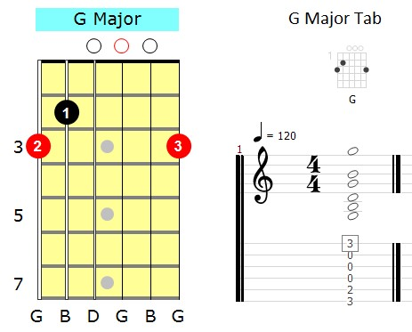

Типи акордів
- Мажорні
- Мінорні
- Септакорди
- Зменшені
Таблиця акордів
| Акорд | Тип | Ноти |
|---|---|---|
| C | Мажор | C E G |
| Am | Мінор | A C E |
| G7 | Септакорд | G B D F |
Схема акорду

Платформа для вивчення теорії музики
| Акорд | Тип | Ноти |
|---|---|---|
| C | Мажор | C E G |
| Am | Мінор | A C E |
| G7 | Септакорд | G B D F |
